Book lifetime Uganda Safaris/uganda tours, uganda trips & Gorilla Trekking Tours with us

Our holiday packages to Uganda are crafted for affordability
Safari Uganda / visit uganda also referred to as the Pearl of Africa a term resulting from Churchill’s justification. Uganda apparently is untouched filled with lots of splendor that can only unlocked through a Uganda safari. Uganda’s abundance exudes multiplicities of attractions ranging from the rolling relief composed of beautiful rolling hills to plains each patched uniquely in specific locations across the country, the lush green vegetation composed of the woodlands ,savannah and thickets ,sparkling water from several crater lakes fresh water lakes and rivers , rich and abundant wildlife. Achieve Global Safaris is at your service to usher you into the great pearl of Africa on a Uganda safari/ safaris safaris (uganda trips).
Uganda safari can be in form of gorilla trekking down at Bwindi impenetrable national parkand Mgahinga gorilla national park, wildlife encounter at Murchison falls national park, Queen Elizabeth national Park, lake mburo and Kidepo valley national park. Safari Uganda can also see you at Kibale forest national park also known as the primate’s capital for chimpanzee trekking
With Achieve Global Safaris, we make your Uganda safari and to rest of east Africa (Kenya,Rwanda, congo and Tanzania) destinations possible. Out team consist of experts whose Knowledge and experience regarding safari is rich and can craft any tour whatsoever be it luxury Uganda safari in our niche of destination
Best Uganda Safari Packages 2025 / 2026
10 Days Best of Uganda Safari (Our Best Seller)
Uganda is blessed with so many destinations all dispersed across various regions of the country. This best of Uganda safari or safari uganda takes you to some of the top destinations and highlights the best selling safari activities in each of them. The tour includes all the neccessities that are needed to run the trip comfortably. Please view the detailed Uganda safari package below.
View Package5 Days Gorilla Trekking & Wildlife Experience (Queen Elizabeth & Bwindi Forest National Park)
This 5 days Uganda safari tour where you will visit Queen Elizabeth National Park & Bwindi Impenetrable National Park. Common sights are wildlife, special bird species and gorillas. Activities include Game Drives, Boat Cruise, & gorilla Trekking. Please view detailed Uganda tour package below.
View PackageBest Uganda Tours
- 3 Days Uganda Gorilla Trekking
- 3 Days Bwindi from Kigali
- 3 Days Uganda Gorilla Safari
- 3 Days Murchison Falls Tour
- 4 Days Bwindi Gorilla Trekking Tour
- 4 Days Bwindi Gorillas Trekking Safari
- 5 Days Uganda Primates Tour
- 6 Days Expedition in Uganda
- 7 Days Best of Uganda Trip
- 10 Days Uganda Safari
- 15 Days Long Adventures
- 21 Days Grand Adventure
East Africa Tours
- 10 Days Wildlife & Primates
- 12 Days Honeymoon Package
- 13 Days Uganda, Rwanda & Kenya
- 15 Days Grand East Circuit
- 18 Days Discover East Africa
- 20 Days Best of East Africa
- 21 Days Grand East Safari
Safari Countries

Uganda safari guide / Uganda tour guide
Uganda and the rest of east africa is sofar the best destination for travelers who wish to have rich experiences. Below is a list of uganda safari acitvities one can do while on a uganda safari
gorilla trekking : while on a uganda safari, one cannot aford to miss out on gorilla trekking actvity(safari Uganda highlight) gorilla trekking takes place down in jungles of bwindi and Mgahinga gorilla national park
Chimpanzee trekking : Chimpanzee trekking : Done at the jungles kibale forest national park also known as the primates capital. Chimpazee trekking another thrill that involve hiking into the jungles searhing for humans closest relative alongside other other primate and bird species
Game drives: for one to have an expereince viewing wild game in their natural setting , a game drive is a must. The drive simply includes hopping into the safari vehicle and driving through various tracks in the national park in search for wild game
Launch cruise/Boat cruise: boat cruises are also another means of increasing on ones adventure expereince. the most common wildlife boat cruises are those conducted on the water bodies in varous national parks ie. lake mburo boat cruise, kazinga channel boatcruise, Murchison falls cruise and several other. the intension is widenning ones wildlife and bird count.
Mountaineering/ hikingthis involve climbing moutains ie Mount Rwenzori, Mount Elgon, Karisimbi hike in Rwanda and several on relief features/p>
Briding involves visiting several birding watching spots to have an expereince of some of the most notable birdings spots in ugansa include mabamba swamps, semuliki national park, murchiosn falls park, queen elizabeth park, mabira forest, kibale forest

Uganda safari/Uganda tour/ safari uganda

Uganda Safari is the life time experience through the pearl of Africa Uganda. You will enjoy the best of Uganda safari with great reputable local operators who have well experienced and knowledgeable driver guides. Discover the unspoiled tourist destination in Africa which is a ho0me of endangered rare wildlife species like Mountain Gorilla, tree climbing lions, Golden monkey, Chimpanzees and many more.
Uganda is one of the best tourist destination not only in
According to the National Geographic magazine one of the USA based travel destination publication, Uganda tourist numbers keep on growing year in and year out. The steady growth of the gorilla numbers in Bwindi Impenetrable National Park and Mgahinga National park. Thanks to Uganda wildlife Authority, local community around the parks for their continuous and tireless efforts to protect, conserve and preserve the environment. The special regards goes to the tourists who have contributed directly to the conservation success of the protected areas of Uganda. The funds raised from different tourism activities like Gorilla trekking, Golden monkey trekking, Chimpanzee trekking, game drives, boat cruise and others go directly to the conservation of the protected areas through uplifting the lively hood of the communities around the protected area.
Your Uganda safari through the beautiful scenery of the country with favourable climatic conditions which gives the country an added advantage to be easily visited throughout the year. The hospitality of Uganda is beyond questions where by it was ranked as the best friendly country in Africa, the people are gentle and ever happy with the most common word hard is your most welcome to Uganda translated in English though its mentioned in different languages depending on which side of the country you’re in for your
Uganda is still very fresh with little tapped tourism sites which makes it pure country with a lot of surprises. Gifted by nature, one stats enjoying their trip just the time you jet in Entebbe international airport. You will be warmly welcomed by the cold fresh breeze of the African largest fresh water body that is Lake Victoria. You will see the rolling hills as you approach Kampala and more on your way to western Uganda a home of mountain gorillas. Crater lakes, Equator, mountains and many more.
Uganda is wealthy with attractions which are distributed throughout the country. The country has 10 national parks which can be combined or paired for the best Uganda safari experience. The Uganda safari starts from one day to the closest national park to the capital city that is Lake Mburo national park, or City tour in Kampala known as city of 7 hills gifted with more cultural and religious attractions, fresh markets and others. Other Uganda safari packages are 3 days Gorilla trekking, 7 days primate safari, 14 days birding safari and many more Uganda safari Tours.
Planning to visit the pearl of Africa but doubting with more questions like Why visit Uganda? What to see in during your Uganda safari? Which animals are found in Uganda or list of birds that can be easily seen during Uganda safari?/ We are here with detailed information about your Uganda safari
Why Visit Uganda?
Uganda which is known by its slogan the pearl of Africa as named by Churchill is truly gifted by nature. It was not by accident the explorer named it the pearl of Africa by compared it with most of the countries he visited in Africa and saw Uganda was unique and complete country. Ever green with most hospitable people who are always welcoming and love friendship. It has amazing wildlife with over 1000 bird species, 10 national parks which include, Lake Mburo National Park, Murchison falls national park, Bwindi impenetrable national park, Queen Elizabeth national park, Mgahinga national park, Kibale Forest national park, Kidepo valley national park, Mt Elgon national park, Mt Rwenzori national park and Semuliki national park.
Uganda is a home of over 300 mountain Gorillas which are found in Bwindi and Mgahinga national park. Kibale forest is the home of over 13 species of primates that include chimpanzee, Black and white Columbus monkey, red tailed monkey mention but a few. During your Uganda safari you will also visit the city of adventure that is Jinja where the source of the Nile is found. There are a lot of fresh water activities like white water rafting, Bungee jumping, canoe, visit the source of the Nile, quad biking and many more. In fact Uganda is all inclusive with more fun than any other country in Africa.
Why take Uganda safari?
With all the scenic beauty of the country, taking Uganda safari is the best alternative one can choose. Uganda can be visited as one destination or combined with other tourism destination like Tanzania, Kenya, Rwanda or Congo. You will meet the friendliest people with diverse cultures with over 17 tribes which belong to Nilotic and Bantu group. The country has 56 tribes with 9 of them are indigenous communities. English is an official language though Luganda and Swahili is widely spoken. Each tribe has its own language, dress code, cultural dances, traditional norms and traditions and others this makes cultural tours in the country very entertaining and unique.
Adventure: Uganda is a source of the Nile of the Longest rivers in the world, some theories tell it’s the longest while others say it’s the second longest after Amazon of Brazil. Being at the source of the river we have great rapids and all primary features of the river at its start like 5 grade rapids, waterfalls and others. There are a lot of water activities in Jinja along the Nile which will entice your Uganda safari like white water rafting, bungee jumping, boat cruise, birding, boat rides and also cultural walks.
Gorilla trekking: Uganda safari is counted incomplete if one does not go for Gorilla trekking. Gorilla trekking is one of the main reason why many guests come to Uganda from different countries across the world. Many travellers like combining Uganda Gorilla trekking with other wildlife experience like wildebeest migration found in Tanzania and Kenya depending on the time of the year. Gorillas are the gentle unique apes that share nearly 98% of their DNA with humans. The activity is unique observing these apes on their natural habitats, this can only be done in three countries across the world with majority of the Gorillas found in Uganda. For conservation purposes one is only allowed to spend maximum of 1 hour with the gorillas in the group of only 8 people per Gorilla family. Gorilla habituation is also done in Uganda where one is allowed to spend 4 hours with the gorillas at the group of only 4 people.
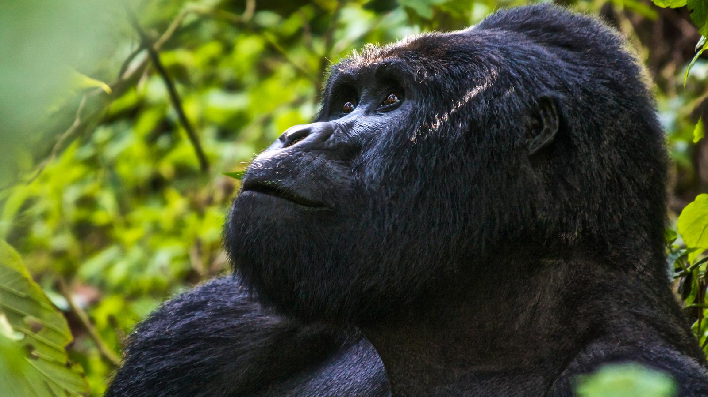 Uganda Gorilla Trekking is one of the best safari experiences.
Gorilla trekking is very unique as its life time experience where you get opportunity to get closer encounter with the Mountain gorillas. The gorillas are led by the sliver back Gorilla which is the main dominant in the family. Its always great to face these gorillas especially the young playful gorillas in the family. With more conservation regulations for Gorillas, one has to book the Gorilla permit in advance at the price of 600 usd for this year and 700 usd starting next year.
Chimpanzee trekking: Like Gorillas, chimpanzees are among the primate family which leave in families. Uganda is lucky to be gifted by almost all the primates in Africa. Chimpanzees are found in Budongo forest in Murchison falls, Kalunzu and Kyambura forest in Queen Elizabeth national park and Kibale forest national park also called the capital of primates in the world. Enjoy Uganda safari with Chimpanzee trekking in any of the destinations above. Its only Uganda during your Uganda safari that your assured of seeing chimpanzees in their natural habitat. Like Gorillas, chimpanzee permits are booked in advance and issued by Uganda Wildlife Authority. One is allowed to spend 1 hour after meeting the Chimpanzees take enough photos and videos and others.
Wildlife viewing/Game viewing Visit any of our 10 national parks during your Uganda safari and get the best wildlife experience. You will be accompanied by our experienced driver guides who are well knowledge with all the national parks. They know when and where they can see specific type of wildlife according to the guest’s point of interest. One can view the African big five during your Uganda safari. These include Lions, leopards, Buffalo, Elephants, Rhinos in Ziwa, Giraffes, Zebras and may more.
Birding Safaris: Uganda has over 1000 species of birds making it known as the birding paradise with the most seen birds are Shoebill, fox weaver bird, sunbird, ibis, harmer kop, Egret and others.
Mountain Hiking: Like hard active Uganda safari, Uganda has three mountains for hike those are Mt Rwenzori, Mt Elgon and Mt Mgahinga. The Rwenzori mountains is among the few mountains in Africa with permanent snow at the peak. One can hike up to the peak for 7 days Uganda safari.
Uganda is exceptional and very scenic attractive safari destination located along the Equator. The country is pride of abundant wildlife that attracts more tourists to the country. Take your trip to Uganda and get the best wildlife experience home away from home.
Uganda Safaris Tours/ safari uganda tours/ uganda trips
Uganda is one of the top 10 tourist destinations in East Africa that a tourist of an East African Safaris can decide to explore in order to fulfil their travel desires. Located in Eastern Africa, Uganda is one of the tourism hubs Africa boosts of because of the numerous attractions and activities that it has to offer to tourists interested in visiting it.
Uganda has a lot to offer for the different tourist types interested in different activities and attractions, for instance, the country boasts of a number of historical sites, wildlife protected in the national parks, game reserves sanctuaries, festivals that tourists on the Safaris Uganda packages can engage in, to have a great time as they learn and so on. Monuments that have a lot of significance in the history of Uganda, religious sites that have interesting information once visited, physical features and many other attractions all of which are guaranteed to make the tourist’s experience in the country memorable and worth their time.
With the different types of tourism, Uganda will offer the best tourism activities that tourist will engage in to make their Uganda Safari experience memorable and worthy of repeated visits. While on a Safaris Uganda tour, tourists can see a number of tourism destinations while participating in the different types of tourism as explained below;
National Parks in Uganda (Wildlife Tourism in Uganda)
Wildlife is protected in the national parks in Uganda and there are 10 national parks that offer different and unique tourist attractions. These national parks are some of the top 10 tourist destinations in East Africa that tourists should not miss out on during their East African safari particularly Uganda tour/safari as explained below.

Queen Elizabeth National Park: Tourists carrying out a Queen Elizabeth national park tour will have a chance to see a number of tourist attractions that will make a tourist’s Uganda tour memorable. Among the different attractions that can be seen in the park include; four of the big five animals that is the elephants, buffalos, lions and the leopard, the tree-climbing lions are the most fascinating attractions that tourists will come across because it is not in the nature of the lions to climb trees. Primate species can also be seen in the Kyambura gorge where the primate species like the black and white colobus monkeys can be seen, chimpanzees; it is in the gorge that chimpanzee trekking can be carried out and also activities in other areas of Queen Elizabeth National Park can be carried out for example game drives, lion tracking, boat cruise, birding, and so many others.
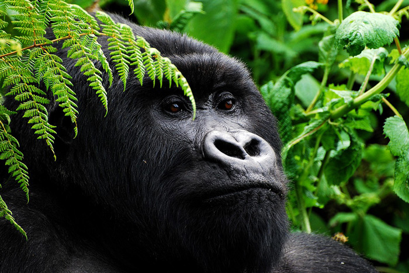Bwindi Impenetrable National Park: For tourists interested in Uganda gorilla tours, Bwindi impenetrable national park is the place to be with 18 habituated gorilla families, which are dispersed in different sectors of the park that is Nkuringo sector, Rushaga sector, Buhoma sector and Ruhija sector with each sector having different gorilla families in Uganda which enables different tourists interested in carrying out gorilla trekking in Uganda to participate in the activity. The park is also a home to an amazing indigenous group of people that are called the Batwa who have distinct behaviour as compared to other groups of people in the country the Batwa are forest people who survive on hunting and collecting fruit once the tourists embark on the Batwa trail they will be able to engage with them and understand their behavior which is quite interesting to watch. Other attractions in the park include the forest which is a habitat to numerous bird species and so much more.
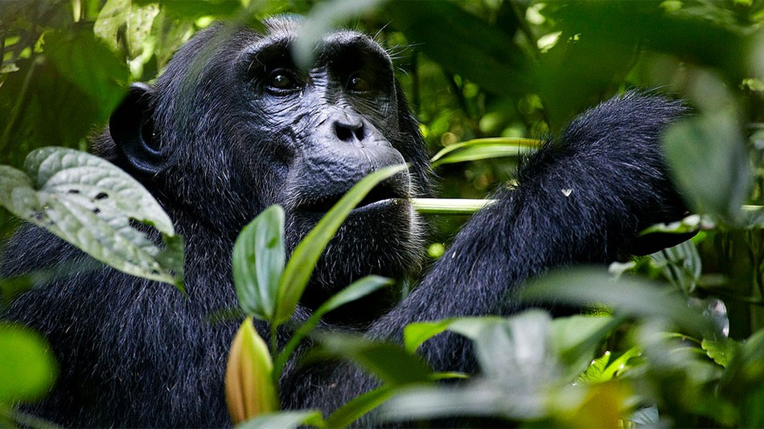Kibale National Park: For any tourist interested in carrying out a Safari Uganda tour, he should consider visiting Kibale national park in order to have the ultimate primate experience. The park is the primate hub among all the parks in Uganda and East Africa at large. Visiting Kibale national park will give tourists the chance to see different primate species like the chimpanzees which are over 1000 in number, and with the chimpanzees tourists can go chimpanzee trekking and chimpanzee habituation which is an interesting activity that involves tourists participating in the training of the primates to get accustomed to human beings and it should be noted that chimpanzees habituation is only carried out in Kibale national park in East Africa. Other activities that can be carried out include nature walks, bush crafts for children aged 15 years and below, birding in the Bigodi wetland sanctuary. By carrying out a Kibale national park tour, tourists will have the greatest time while on their Uganda tour.
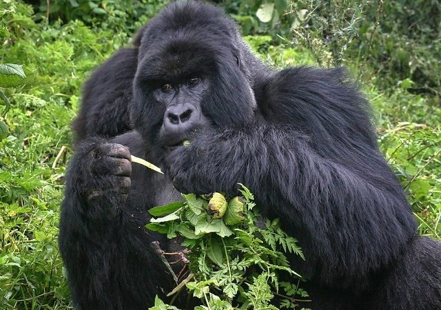Mgahinga Gorilla National Park: Mgahinga gorilla national park will offer the utmost tourism adventure to the tourists interested in adventure tourism. The park offers the ultimate gorilla experience with the Nyakagezi gorilla group that can be trekked all year throughout. The park is also home to the golden monkey and endangered monkey species that can be found in the bamboo trees of the Virunga mountains in the park. In the bamboo trees, other monkey species like the black and white colobus monkeys can be seen and a number of bird species that use the bamboo trees as spots to put up their nests. Activities that can be carried out in Mgahinga National park include; gorilla trekking, hiking 3 of the 8 Virunga mountains that is Mountain Muhabura, Mount Gahinga, and Mount sabyinyo. Batwa trail experience where they are able to see the Batwa people and how they live within the small communities in the forest.
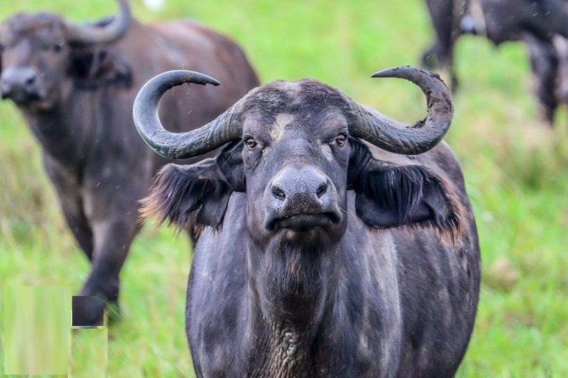Kidepo Valley National Park: Kidepo National Park is yet another medley of wonders being the only national park in Uganda where you can find the amazing cheeters and large herds of cattle blended with the unique Ostrich birds. Game Drives are common in this park and you will see animals like Lions, elephants, zebras and many others. A visit to Kidepo National Park while on your Safari Uganda Tour will be a highlight of a lifetime. Kidepo National Park is located in the northern part of Uganda and is sort of an isolated national park in that if one wanted to go by road, they would hve to drive for 2 days to get there in good shape to do the activities. Your Safari Uganda tour can be blended with other trips along the way like sipi falls hike or Bakers fort tour in Gulu or a stopover at Murchison falls and Ziwa Rhino Sanctuary. Some travelers who like to do Kidepo only and can afford to fly to Kidepo use Chattered flights. It is such an amazing experience.
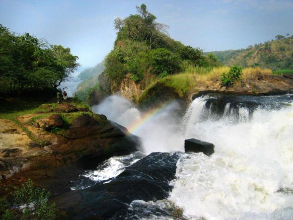Murchison Falls National Park: While carrying out the Safaris Uganda tour, tourists will have a chance to see Uganda's biggest national park. Carrying out the Murchison falls national park tour will give tourists opportunities to visit numerous attractions and participate in a number of activities like top of the falls hike, boat cruises on the upper and the bottom of the falls which is quite exhilarating, game drives where a number of animals can be seen in the grass plains grazing; like the zebras, Uganda kobs, elephants, buffalos and a number of other animals.
Nocturnal animals can be seen during the night game drives which can be rewarding because tourists can even witness how they hunt for their prey which is quite difficult to see in the day game drives. These animals include the lions, leopards, hyena and so many others. On the way to Murchison falls national park, tourists can visit the Ziwa Rhino sanctuary where the endangered white rhinos can be tracked in Uganda.
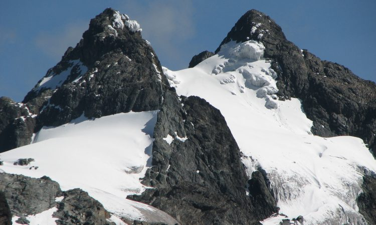Mount Rwenzori national park: For adventure tourists, mountain Elgon national park is the adventure spot to carry out and engage in adventure activities. The park is home to the mountain Rwenzori the only snow-capped mountain in Uganda and the highest mountain in the country. Tourists can carry out mountain biking on the slopes of the mountain which is only available for professionals only because it is such a risky activity though fun. Hiking can also be carried out where tourists can climb up to the summit of the mountain where they are able to see a number of features including the snow covering the summits, hiking on mountain Rwenzori can be carried out through the different trails that is kilembe trail, Mubuku River Trail and many more.
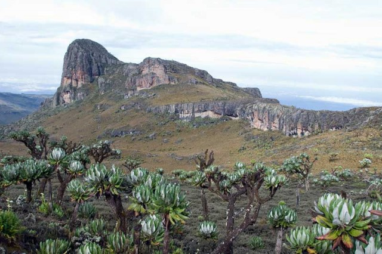Mount Elgon national park: just like mount Rwenzori, Mount Elgon will offer an amazing experience for adventure tourists, for instance, they can climb mount Elgon which is quite an adventure, the slopes of the mountains are filled with coffee plantations, bird species, different activities can be carried out for instance Hiking, Biking Abseiling, Climbing Nature Walks, Birding, Caving, Waterfalls, Hot-Springs, Ancient Rock Paintings, plus Cultural Interactions.
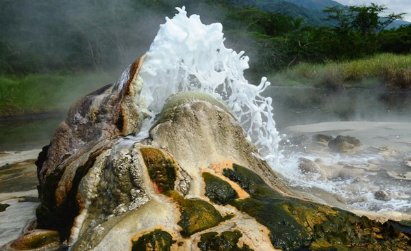Semliki national park: The park is a birder destination with about 400 bird species which can attract tourists interested in carrying out birding. Some of the bird species that attract the tourist include Western bronze-napped pigeon, yellow-throated cuckoo, piping hornbill, red-sided broadbill, Xavier’s greenbul, capuchin babbler, a yellow long bill, blue-headed flycatcher, red-billed helmet-shrike, crested malimbe, pale fronted ant pecker, and Chestnut-breasted negro-finch among others. Tourists on their Uganda tour can also see a number of animal species that can attract tourists during game drives for example; tourists can also see the Sempaya hot springs which are believed to be of traditional importance, for example, it is believed that the water from the hot springs can heal diseases like ringworm, bareness, and impotence can also be cured and so on.
Other attractions that can be seen in Semuliki National Park activities include the Batwa trail experience where tourists can visit the Batwa people and understand their interesting nature of living in the forest and surviving on only forest products. For tourists in the park, when they embark on the red tail monkey trail to the Semliki River, a number of red tailed monkeys will be seen and also other different monkey species as well as crocodiles, buffalos and the elephants.
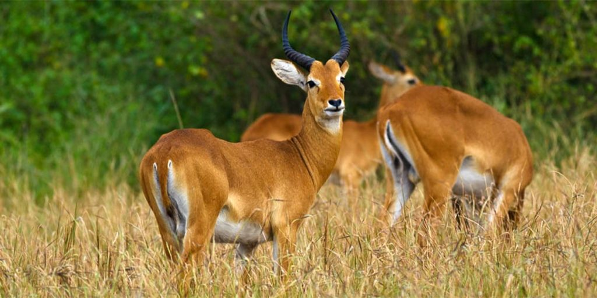Lake Mburo national park: Lake Mburo National Park is an important national park in Uganda which can satisfy the desires of the tourists as they participate in the different activities that they can participate in to make their experience worthy while in the park some of the activities that they can participate in include birding, horseback riding as you see the different animal species, tourists can participate in forest walks where they can see the different bird species other activities may include boat trips, fishing in lake Mburo where visitors can spend some time catching fish which is an exciting adventure for the tourists.
Sanctuaries in Uganda
There are different sanctuaries in Uganda where different animal species are brought in order to protect them and increase their numbers. The sanctuaries in Uganda are doing a great job of conserving different animal species for instance the endangered white rhinos and a number of other animals which are protected for the rest of their lives however under different circumstances for instance if the numbers have increased they can reintroduce them to areas where they once lived or to different protected areas they have never been. Some of the sanctuaries in Uganda include the following which can be visited by the tourist on their Safaris Uganda tour.
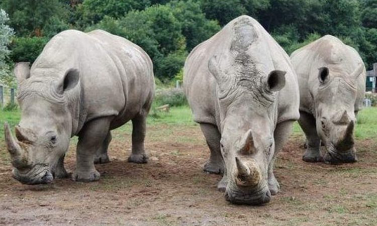Ziwa Rhino Sanctuary: Ziwa rhino sanctuary is located in Nakasongola district; the rhino sanctuary was established to protect the endangered white rhinos in the country and the country. In Uganda, the numbers of white rhinos dramatically dropped during the civil war that happened during the era of Idi Amin this prompted establishment of the rhino sanctuary.
It is important to note that in Uganda for a tourist interested to participate in rhino tracking, the sanctuary will offer the best experience and it is the only place where it can be carried out because of the many numbers that can be found. Another place where the rhinos can be found in the whole country is the Uganda wildlife education centre where only two rhinos can be found therefore the Ziwa rhino sanctuary is the best place to be when you’re interested in seeing and tracking the rhinos.
At the sanctuary, a tourist can carry out a number of activities which is quite an interesting affair for instance birding can be carried out because there is a swamp within the sanctuary which makes it home to a number of birds for example Abdim's Stork, Blue-spotted Abyssinian Ground Hornbill, Booted eagle, African Black Crake, Broad-billed Roller, African Black-headed Oriole, Bronze Manikini among other bird species.
And also important to note among the bird species is the interesting shoe bill which is considered a critically endangered bird species that can be seen in the swamp. The sanctuary has achieved some success Ziwa has had quite the success. Ten calves have born (although sadly, one was still-born) and there are five crashes living in the sanctuary alongside bushbuck, leopard, honey badgers, armadillos, waterbuck, warthog, and vervet monkeys.
The sanctuary has achieved some success throughout the years of the establishment including the success of ten calves that have been born and the five crashes living in the sanctuary where we can also find them living alongside bushbuck, leopard, honey badgers, armadillos, waterbuck, warthog, and vervet monkeys.
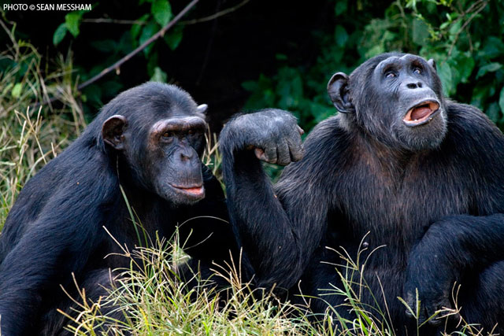Ngamba Chimpanzee Sanctuary: Come and experience a life-changing experience as you visit the Ngamba chimpanzee sanctuary which was established in 1997 in order to protect the orphaned chimpanzees. The sanctuary has a number of chimpanzees that can be seen playing in the different trees on the island. While heading to the sanctuary, the tourist will either use a speed boat which will take approximately 45 minutes for tourist to reach the sanctuary alternatively, tourists will use a motorized canoe that will take them about 90 minutes to one hour to reach the island but on the way to the island, they will have the opportunity to have sailed along the largest lake in Uganda and the largest fresh water lake in Africa and the second in the world.
At the sanctuary, a tourist will come across a number of orphaned chimpanzees whose hope have
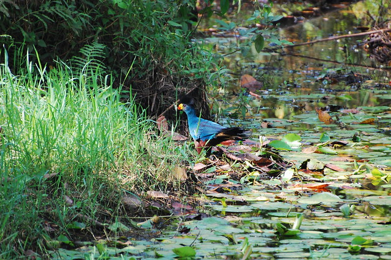Bigodi wetland sanctuary: Located in Magombe swamp, the sanctuary is known for its biodiversity that will fascinate the tourists while on their Uganda safari tour, the wetland is a home to a number of primate species including; the red colobus monkey, baboon, black & white colobus monkey, blue monkey grey cheeked, mangabey, vervet monkey, red tailed monkey, and the L’hoest’s monkey. A sanctuary is a must-go-to place for birders because of a number of bird species that can be seen on a daily where they can even have a chance to see fifty new species on their bird list.
Some of the bird species that can be seen include the blue turaco which is quite common in the sanctuary, White-spotted Flufftail, Yellow-spotted Barbet, Hairy-breasted Barbet, Yellow-billed Barbet, Western Nicator, Grey-winged Robin-chat, White-tailed Ant-thrush, Brown-backed Scrub-robin, Black-and-white Shrike-flycatcher, Brown-throated Wattle-eye, Superb Sunbird, and so on. The wetland sanctuary has also benefited the community because through the earnings got from the tourists, there has been the improvement of people’s standards of living the money through the construction of Bigodi nursery and secondary school and also the construction of bridges on the swamps which in the long run has led to the development of the area.
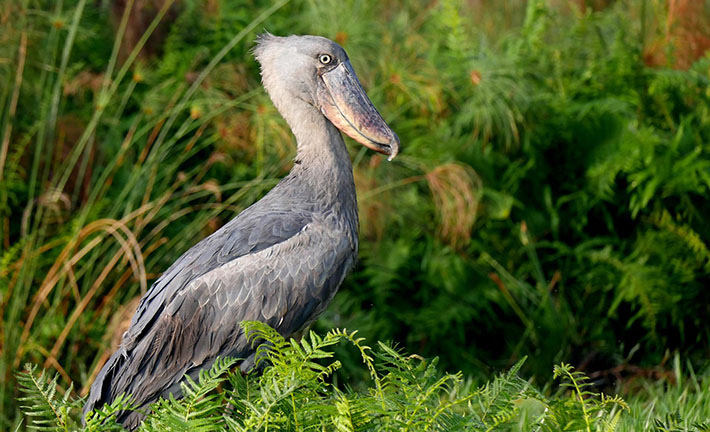Mabamba bird sanctuary: Tourists should not miss out on the adventure while at Mabamba bird sanctuary, for bird lovers, the sanctuary is just a birding paradise that will meet all your desires, the area has been a number of migrant bird species that have made it their home and these include Gull-billed Terns, White-winged Black Terns and Whiskered Terns. The swamp is also a habitat to the threatened bird species which include; Pallid Harrier, Papyrus Gonolek, White-winged Warbler and the Blue Swallow. There are many numbers of blue swallows that have been recorded yearly which makes it an important birding place. Important to note about the bird sanctuary also is the fact that it also important are for the shoebill stork which is also a threatened bird species globally. At the Mabamba birding sanctuary tourists will have a chance to see different shoe bill stork feeding on Lungfish, these are usually in pairs.
Game Reserves
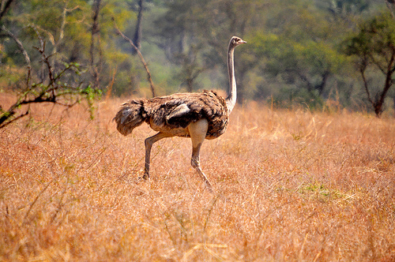Pian Upe Game Reserve: The game reserve is one of the biggest conservation areas that Uganda has which has a number of attractions those tourists will have a chance to see once they visit the game reserve. Located in Karamoja district, the reserve is the ultimate nature destination for nature lovers with a number of attractions, for instance, the different bird species which have been recorded to be over 285 which makes it a perfect destination for carrying out birding.
The reserve is also home to mountain Kadam which tourists can climb as an activity; however, tourists can also carry out mountaineering during Mount Elgon national park tour. Other activities that can be carried out include guided nature walks where a number zebras, antelopes, baboons, and the many birds can be seen in the reserve. Community walk can also be carried out
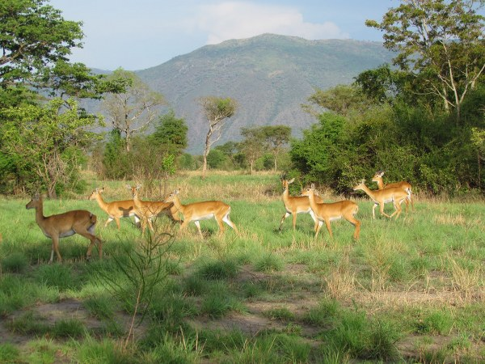Toro Semliki Game Reserve: The reserve will be the ultimate destination for tourists interested in wildlife. Located in, tourists will find the reserve interesting because of the different attractions that will make their stay/ tour in the reserve memorable. The reserve is home to a number of primates including the chimpanzees, red tailed monkey, baboons and so many more. A number of animal species can also be seen while at the park including some animal species like Waterbucks, Warthogs, Bushbucks, Buffaloes, Uganda Kobs, and Elephants which tourists can see during game drives in the park as part of the activities that can be carried out inside the park. Other activities include; community walks, nature walks, and many others.
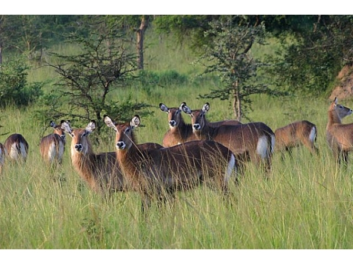Matheniko Game Reserve: Another reserve that tourists can visit is the Matheniko game reserve which like other game reserves in Uganda has a lot to offer in order to meet the needs of the tourists while in the country. For sport hunters, Matheniko game reserve offers the best sport hunting services in the country and also a number of game animals can be seen which include the Cape buffalo, eland, roan antelope, dik-dik, mountain reedbuck, waterbuck, Uganda kob, Oribi, Jackals, spotted hyenas, Leopards, civets, serval cats among others.
The Matheniko game reserve is also home to a number of primate species like Olive baboons, vervet monkeys, patas monkeys. A number of reptiles can also be seen at the Matheniko game reserve for instance rock pythons, smaller puff adders, Agama lizards, skinks, geckos, and chameleons are also a common sight.
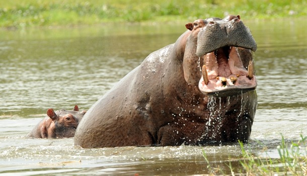Katonga Wildlife Reserve: The Katonga wildlife reserve is another rich game reserve that the country has to offer to its tourist. The park was gazetted in 1964 as a game reserve, to protect the migrating animal species from Tanzania and Sudan from poachers and in the long run, it served as the corridor for the migrating species. These animals migrate in search of pastures and water and this can also be seen in Masai Mara national reserve during the wildebeest migration from the northern Serengeti national park to the southern Masai Mara region.
In 2015, 5 impalas were restocked in the park which led to the dramatic increase of the animal species which now stands at 300. The reserve is also home to a number of butterfly and bird species which can attract birders and butterfly enthusiasts. A number of other animal species can be seen during guided nature walks and game drives like the zebra, topi and eland, elephant, buffalo, waterbuck, bushbuck, Uganda Kob, Waterbuck, Leopard, Buffalo, reedbuck, bushbuck, and duiker reedbuck and sitatunga. Primates like the Black and White Colobus Monkey, and Olive Baboon can also be seen.
Other game reserves that can be visited by tourists while carrying out their Uganda tours include Aswa lolim game reserve, Bokora corridor game reserve, Bugundu game reserve which will offer the utmost tourist adventure which will ensure tourist satisfaction.
Cultural Tourism in Uganda
Cultural tourism in Uganda is one of the most rewarding types of tourism in the country given the fact that Uganda is one of the East African countries with a large number of tribal groups where each tribal group has distinct features and a number of things to offer to the tourists. The culture that they execute, their lifestyles, architecture, art, ways of living and religion all offer one of the best Uganda Safaris cultural tourism packages once visited. On a Uganda tour, tourists interested in participating the Uganda cultural tourism will have a number of items to look at as follows;
Uganda Cultural Sites
There are many recognized cultural sites in Uganda that tourists will find interesting, educative while on their Safaris-Uganda tour which can be as part of the East African Safari. Cultural sites in the country as spread throughout the country because of the different tribes across the whole country. Some of the most recognised tribes in the country include the Baganda, Basoga, Banyankore, Batoro, Baganda, Banyankore, Banyoro, Bakonjo, Basoga, Bakiga, Bafumbira, Batooro, Bamba, Batwa, Banyole, Basamia- Bagwe and Baggwere among other tribes that have unique cultural sites with a lot of significance that can be visited different tourists.
Kabaka Daudi Chwa 11 was responsible for the introduction of modernity in the Buganda kingdom where he constructed the first modern house in the kingdom of Buganda. He is also considered the father of modernity in the kingdom who believed inequality among the different genders that is to say during his reign, women were allowed to eat chicken and eggs like the men which were not the case in the previous years and another Kabaka that was buried there is Kabaka muteesa 11 who was responsible for the independence of Uganda.
He fought tooth and nail against the British rule and became the first president of Uganda. Other interesting details of the tombs are the architectural designs where most of the main shrine/ the burial place was constructed using wooden poles and roofed with grass to maintain the tradition of the early architecture of the people, the floor of the shrine/ burial site is filled with dry grass and handmade mats which brings out the authenticity of the place.
When a tourist is inside the shrine, they are blocked by a wall that is covered in bark cloth which on the other side is believed to be the sacred forest where the four kings/‘’kabakas’’ are believed to have disappeared because, in Buganda, the kabakas don’t die they just disappear. The significance of the tombs to the people of Buganda and different attractions at the royal tombs will enable tourists to enhance their experience as they visit it.
From that day to today it is believed that those are the breasts of Nyinamwiru oozing out milk which is an exciting display that can be enjoyed once seen, throughout the hike to the caves, tourists on their Uganda Safaris tour will have a chance to see a number of attractions like the magnificent waterfalls and as part of the tailored amabere ganyina mwiru caves tour, tourists can also hike Nyakasura hill which has a giant footprint which is believed to be a footprint of one of the demigods all of this will offer the amazing time on your Safaris Uganda tour.
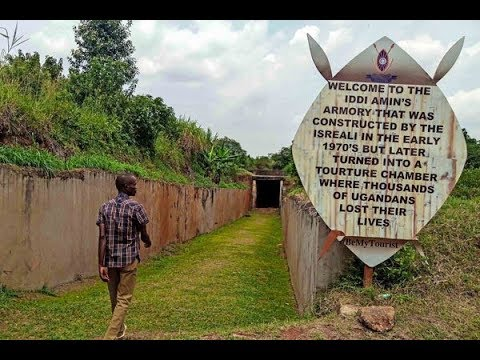Idi Amin Torture Chambers : During Idi Amin’s reign of terror, a number of Ugandans that were against his rule were kidnapped in broad daylight, at night and were brought to the torture chambers which are located at Bulange in Kampala city inside the Buganda king’s palace which during the 1966 Buganda crisis when the then prime minister of Uganda Dr Milton Obote took over the palace which led to the death of thousands of people leading to the then Kabaka of Buganda Muteesa 11 fleeing the kingdom and going into exile in the United Kingdom.
The torture chamber was established by Obote who used them to punish those that opposed his rule and after his overthrow. Idi Amin also used the same torture chambers to inflict pain and punishment on the people that were against his rule. It is believed that over 30,000 people were killed in the place which has 5 cells. Here they would pile people on top of the other put water in the different cells and they would electrocute them.
People were also killed by smashing their heads with sledge hammers and many different ways which was really heart breaking and their bodies were thrown in rivers, on the streets for people to see the consequences of opposing Amin’s rule which instilled fear today a tourist that visits the chambers will see foot and palm prints that were left behind after the people where piled on top of the other.
It should be noted that Idi Amin had a number of torture chambers including one that was beneath the dictator’s luxurious residence at Nakasero Hill which cannot be seen today making the one of Bulange a prestigious one.
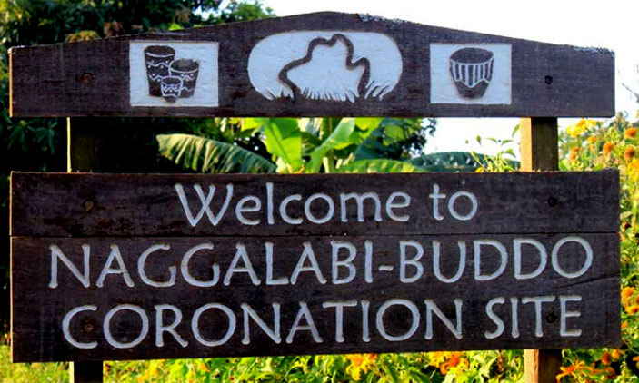Nagalabi Coronation Site: For over 700 years, the people of Buganda have used the Naggalabi coronation site Buddo as the coronation site for the people of Buganda Kingdom. During the ceremonies of the coronation, a number of traditions are followed to ensure that the King and the people in the area should engage in after the coronation of the king/ kabaka of Buganda kingdom. The site has a number of attractions including the Mbonelede tree which is believed to have been used by the first king of Buganda Kato Kimera as his court to settle disputes in his kingdom. The tree is umbrella-shaped which gave shade to the kings and chiefs that used it as a court interesting about the tree is the fact that it is believed to be the oldest tree in Uganda.
Another attraction at the naggalabi coronation site is the Buganda house which is only entered in by the Kabaka/ king after his coronation at the site it is believed that he spends nine days in the house where he thinks of how he will exercise his power, he chooses people that will help him to give his people. Interesting about the period, the people around the area are not supposed to engage in sexual intimacy during the 9 days period until when the period of 9 days is done. The day of coronation tourists can engage in cultural dances because it is a day of celebration, they can also feast of different dishes that are prepared to the visitors which is a thrilling experience.
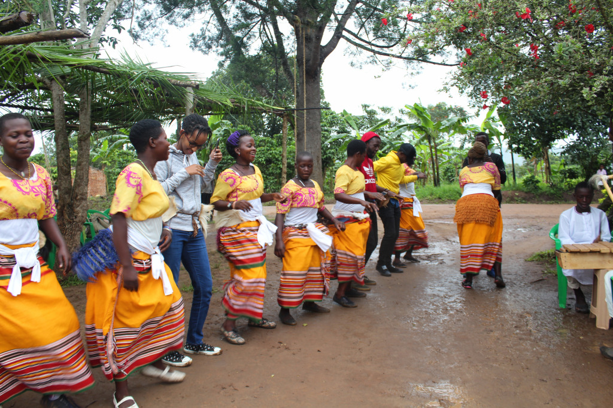Entanda Cultural Center: Tourists Interested the Uganda Safaris cultural tours as part of their Safaris Uganda tour will have an experience of a lifetime once they visit the Entanda Cultural Centre which is dedicated to the promotion of tourism through cultural exchange, located in Mityana, the Entanda Cultural Centre is the cultural tourism spot that tourist will visit to understand culture and tourism in the country. Visiting the cultural centre will enable tourists to participate in activities like sport hunting this is done by releasing domesticated animals like goats into the bush and the tourist are able to hunt it, once it is is got it is then prepared for their consumption and by this the tourist take part in all the activities of cooking preparing local dishes like Luwombo, harvesting and feasting on organic fruits like jack fruit, oranges, papaws and many more making the activities authentic. Traditional dances are performed and during the different activities, only authentic tools are used for instance during digging hand hoes are used, cooking of food firewood is used which offers an authentic experience.
Uganda Religious Sites
There are a number of religious sites that tourists on their Safaris Uganda tour can visit n order to have an insight into the religious beliefs and practices that the people of Uganda believe in. In Uganda, tourists can enjoy Religious tours at the different religious sites which are spread across the country among the different sites some interesting ones that should not be missed out on a Uganda Safaris tour include the following these religious sites have a lot in stock for the tourists to unlock as they go onto their Uganda tour.
Uganda Martyrs Shrine Namugongo: In the commemoration of the Uganda martyrs who were killed because of their faith in God on the orders of Kabaka Mwanga the then king of Buganda kingdom. Uganda martyrs shrine Namugongo was established in remembrance of the martyrs. The martyrs that only believed that there was no supreme leader over God, disobeyed the orders of the king which infuriated him and this led to the burning them alive which later killed him. A tourist undertaking a Uganda Safaris Religious tour at the premises will have a chance to visit the Uganda martyrs museum where displays of how the martyrs where killed which is so heartbreaking because among the displays royal guards are seen stabbing the martyrs with spears, some their heads where smashed by axes, other martyrs were burnt which can all be seen which is very heartbreaking to watch but in the process you are able to learn about religion. These martyrs were killed on 3rd June 1886 and by this every 3rd June annually, celebrations for the martyrs are carried out which is a day for feasting, having fun and most especially celebrating and praying for Uganda martyrs, come celebrate with the martyrs as you have fun.
Tourists can also visit Uganda Martyrs Lake where it is believed by many people however this is not yet proven that some martyrs were stabbed and the blood flowed to the lake making it sacred. Today, thousands of pilgrims come to collect some take at home water which is believed to be sacred in a way that can cure diseases, bareness and many more. At the lake, it is where the celebrations of the Uganda martyrs are carried out and it should also be noted that three popes have held services at the lake making it a sacred place of worship that is Pope Francis pope paulV1, and Pope Benedict of the Roman Catholic Church.
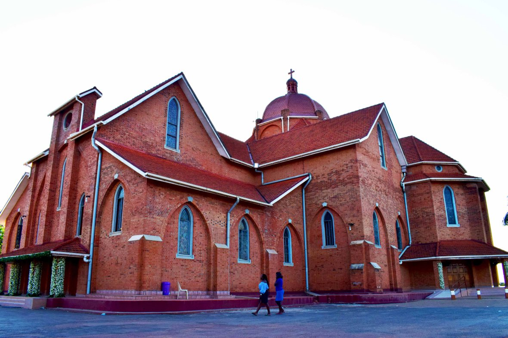Namirembe cathedral: Another interesting religious site that should be visited is the St Paul’s Cathedral which is known as the Namirembe Cathedral which is the oldest cathedral in Uganda which was constructed during 1915 and 1919’s however it should be noted that this is not the first church in the premises to be constructed there were four different cathedrals that were constructed in order to accommodate the Anglicans however because of different reasons like the increasing numbers of believers, thunderstorms that destroyed them and so many more but later the construction of the permanent structure was constructed which can be seen today. Another interesting attraction at the cathedral is the graveyard of the first east African Bishop James Hannington which who was also killed on the orders of Kabaka Mwanga the same Buganda king who ordered the killing of the Uganda martyrs. It is believed that in Buganda kingdom, that during that time an enemy to the people of Buganda and the king would come from the east which was the case for James Hannington who spent part of his life volunteering for the church missionary society he was sent to East Africa and he used the Eastern route, when Kabaka Mwanga got to know about this he ordered the Busoga chiefs to capture him where he was killed after spearing him in both sides and he is considered as one of the first Uganda martyrs together with his friends and when Joseph Mukasa Balikuddembe an official in the Kabaka Mwanga’s cabinet and a roman catholic condemned the act of killing the bishop, he was beheaded by the king. The place has a lot of history to offer which is quite interesting once visited.
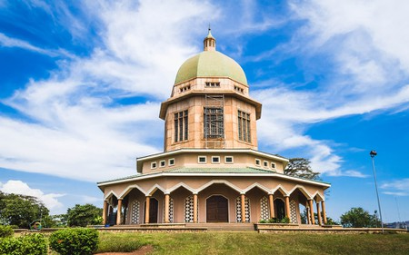Bahai temple: Another religious site that can be visited, Uganda is a diverse religious country that caters for different faith-based tourists that come to explore Uganda while on their Uganda Safaris tour. The Bahai temple not being an exception has attracted many faith-based tourists to come to the premises because of the doctrines of the religion which are based on equality and the humanity and the unity of all races which is quite interesting because most of the religions are against different people with their different beliefs.
The Bahai temple in Uganda will offer the best experience because it is the only Bahai temple among the 9 that are all over the world, visit Uganda and take part in discovering what the temple has to offer, eye-catching about the temple is the architectural designs which is from years ago but still beautiful.
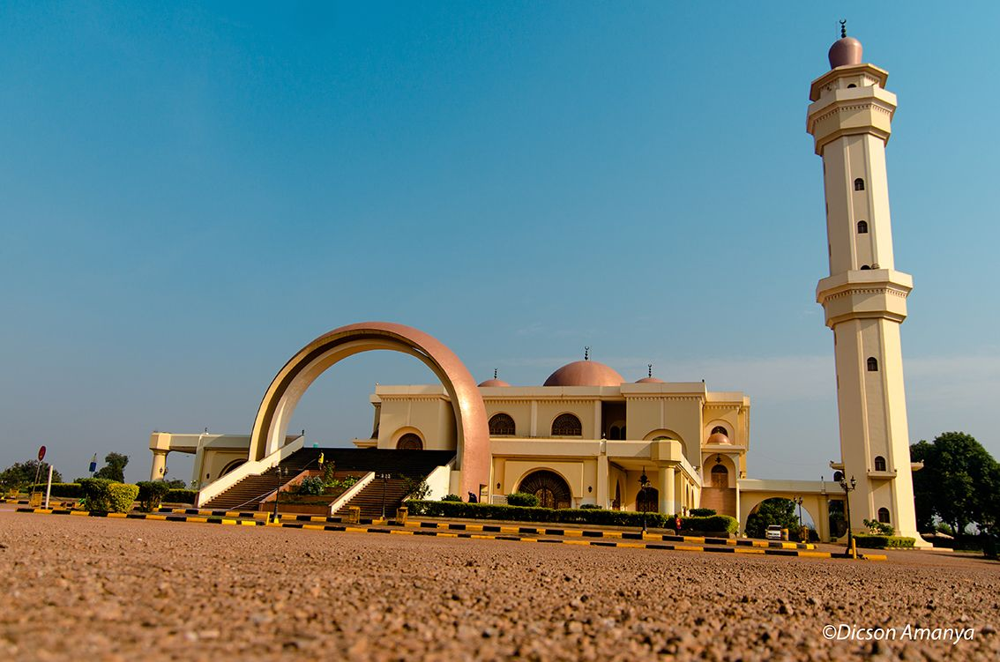Uganda national mosque/Gadaffi Mosque: Also known as the Gaddafi mosque, the mosque is of a lot of significance to the Muslim worshippers in the country, it was constructed by the late Colonel Muammar Gaddafi the then leader/ president of Libya and it is the biggest mosque in East Africa. The mosque is one of the major religious tourism destinations that a tourist can visit while carrying out a Safaris-Uganda tour. Some of the features that can catch the eye of the tourist while visiting the Uganda National Mosque is the architectural design, important to note about the design of the mosque is the time and money that was put to produce quality work.
The doors and the windows were imported from Italy, the ceiling hangs bright beautiful chandeliers which make the view exceptional, the lights that were put in the mosque are one of the best which gives off an ancient but classy vibe with a tone of modernity which was imported from Egypt. The fact that it is the biggest mosque is also reason enough to attract different tourists to come and experience its beauty.
Physical Features
A Safari Uganda tour will have a lot to offer to tourists that are interested in unlocking the treasure that the country has to offer. The pearl of Africa as it was named by Churchill has a variety of physical features like the mountains, lakes, rivers, waterfalls among others which will captivate one’s stay while in Uganda. There are many historically rich physical features that have a rich history that can be interesting for them as they embark on their journeys to see them and others have many attractions that can be seen
Water bodies
Uganda is a blessed to be one of the best countries with a rich biodiversity including a number of cultural sites, different tribes with different people who live harmoniously together, a number of relief feature like hills, mountains, ridges and many others but what will also catch the attention of the tourist while on a Uganda tour is the availability of different water bodies which have unique activities and attractions that will make a tourist enjoy there stay in Uganda while they carry out their Safaris Uganda tour. These include the following as explained below.
Lake Victoria: The second largest fresh water body lake in the world, the largest water body in Africa and in Uganda and one of the sources of the longest river in Africa and the second-longest in the world. The lake Victoria is every tourist’s dream, visiting the lake will offer the best adventure experience to the tourist in a number of ways including the different attractions that can be found for example the entertainment area like beaches.
For tourists that are interested in leisure and relaxation Lake Victoria is the area to visit it has a number of beaches like the white sand beach, spennah beach, Imperial Resort Beach Munyonyo which offer different services like bar services, entertainment through music beach sports and many others, the beaches are a major attraction to them. For tourists interested in leisure and relaxation, a Uganda tour will offer that.
Still on Lake Victoria, the Lake has a number of islands that can be great honeymoon spots, need for environment change and if the tourist is in need of relaxation, the different islands include Ssese islands also known as Kalangala Islands where tourists can escape the daily traffic of town and enjoy life at the Island which is quiet relaxing.
Tourists can also visit the Banda islands, which are the most relaxing islands that tourists on their Uganda tour can visit; the little paradise offers services that are out of the world to ensure that all tourists that visit the islands are guaranteed excellent customer services. The staff of the Banda Island is accommodative and offer a variety of tourism activities in order for the tourist experience at the island is the best. Some of the activities that tourists can engage in include beach sports, bar services, accommodation, sport fishing, canoeing, and many others.
Kabaka’s lake: Another water body that tourist should not miss out to visit while on their Safaris Uganda tour is Kabaka’s lake which is found in Kampala city the capital of Uganda. Dug in 1886, the kabaka’s lake is the largest manmade lake in East Africa. The lake was constructed on the orders of Kabaka Mwanga who was also responsible for killing the Uganda martyrs.
Although history referred to as a tyrant and a dictator, he has a good side which is portrayed in history by the time he ordered the Buganda people to dig a manmade lake although it was a great idea, the lake was dug because of his selfish reasons of wanting to connect Lubiri palace to his other palace in Munyonyo. However, this was unable to happen because people revolted against his brutality and it should be noted that the digging of the lake stopped in Ndeeba.
The lake today still has the same depth and the water volumes have not decreased which is quite surprising because it is surviving on only spring but even with the absence of a water inlet, it still stands as the largest manmade lake in East Africa which is quite interesting, tourists should come and witness the beauty of the lake with the number of bird species that are seen, water sports that are carried out and so many more.
Sezibwa falls: among the different falls in Uganda, Sezibwa has a number of interesting information and history attached to it in a way that a tourist would want to come and see it and see whether the myth is right or wrong Sezibwa falls are located along Kampala- Jinja high way tourists will unlock the beauty that falls possesses that can only be found if one takes on a Safari Uganda tours.
Legend has it that the falls were formed as a result of a woman giving birth of twins in form of water forming Sezibwa and Bwanda which is quite an interesting myth that will improve on the the tourist’s experience while carrying out the sezibwa falls tour.
There are a number of tourism activities that tourists can participate in to make their experience memorable for example; Birding this is because of the numerous bird species that can be seen within the area such as Hadada Ibis, Vieillot’s Black Weaver, Tawny Flanked Prinia, African Ground Thrush, and many more.
This makes it a very good birding spot for the tourists interested in the activity. Rock climbing at the falls can be carried out which will enable adventure tourists to have fun as they tour the area, the rocks are relatively easy to climb which makes the experience easy and fun.
Sipi falls: While on your Mount Elgon National Park tour, on your way to the park, a tourist will come across sipi falls one of the famous falls and the most beautiful falls in Uganda. Visiting the falls will give you a chance to participate in a number of activities while at the falls, for instance, mountain biking, sport fishing, you can also visit the coffee plantations near the Falls, birding can also be carried out at the area of the falls among others which can make the whole Uganda tour the best including the...
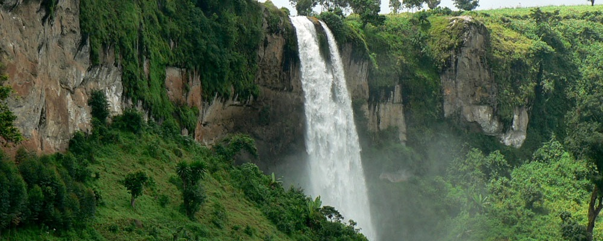The amazing Sipi Falls
Mountains in Uganda
These are different mountains in the country that a tourist on a Uganda tour can decide to hike, the different mountains have different attractions that they offer to tourists once visited. While on a Uganda tour there is the different mountain that tourists can hike in order to have an experience of a life time, the mountains have attractions like the golden monkeys, Uganda gorilla families, different monkey species like the vervet monkeys, black and white colobus monkeys among other monkey species and many others.
Mountain Rwenzori: Mountain Rwenzori is another physical feature that tourists should put on their bucket list in order to have an exceptional Safari Uganda tour, also known as mountains of the moon, the mountain has a lot to offer in terms of the activities tourists can participate in for instance they can go mountain climbing to the tallest peak of the Rwenzori Mountain ranges that is Stanley. Through the hike to the at the peak, a number of attractions can be seen like the different monkey species like the colobus monkeys, chimpanzees and a number of other attractions interesting about the hike up the mountain is the fact that at the peak, the mountain is snow-capped which is quite interesting for a tropical country like Uganda.
Mountain Elgon: Mountain Elgon should be a place for coffee lovers to visit, the mountain is a home to Arabica coffee that is on world demand. On hiking through the mountain tourists will come across a number of coffee plantations that offer a beautiful green cover which is the perfect view once seen. The mountain is not only home to the coffee plantations but also a number of caves like kapkwai cave and many more which were used as shelter by the people but with the events of landslides, the people vacated them but are still beautiful once seen. Visiting Mount Elgon is a part of the Mount Elgon national park tour because the mountain is found within the park.
Agricultural Tourism
Another form of rewarding tourism that tourists can engage in while on their Safaris Uganda tour is the agricultural tourism where different forms of agriculture can be seen wherein Uganda they can see different types of agriculture like commercial agriculture, nomadic herding, livestock ranching, shifting cultivation, intensive subsistence farming, commercial plantations, Mediterranean agriculture, commercial grain farming and many more some of the plantations in Uganda that are notable include the following;
The plantation tours will give the tourists the opportunity to be part of an authentic experience regarding how the product let’s say coffee is planted, harvested, what stages does it have to undergo before it is processed, the weeding process and many more
- Palm oil plantations in Kalangala: Visiting the palm oils in Kalangala district will give you the ultimate adventure because a variety of other tourism attractions await to be discovered, Kalangala district is one of the islands on Lake Victoria that offer the best tourism experience. The island has a number of beaches that tourists can find conducive for relaxation, the white sand at the beaches gives it an exceptional view, the island is any body’s paradise once visited it offers accommodation services from different options including luxury and camping options but aside from that what will catch the tourist’s attention is the palm oil trees which are responsible for the manufacture of cooking oil in Uganda, on visiting the plantations, with the help of the tour guide, tourists will be able to find out when the palm oil is ready to be harvested for the manufacture of oil and many others.
- Kaweri coffee plantation: Located in Mubende district, Kaweri coffee plantation is a large scale coffee farm in Uganda that tourist interested in agricultural tourism in Uganda can visit, the plantation boasts of one of the largest coffee plantations that is seen on the slopes of the beautiful hills giving off a green leafy vegetation as seen from afar which is one of the most unique views. On visiting the plantation which is dedicated to Robusta coffee growing, while on the tour of the coffee plantation, they will have a chance to see 100-year-old Robusta coffee trees whose descendants have offered the best Robusta coffee that is consumed locally and other is exported. Important to note about the plantation are other physical features in the area that is the papyrus swamps which are habitat to numerous bird species making it one of the tourist destinations in the area. In the area of the plantation, highland rain forests can be seen giving off an extraordinary view and it should be noted that the trees and the coffee plants are all found in the same area which is quite unique. The tour at the coffee plantation will give tourists a chance to see how coffee is harvested, grown, how it looks like when it is ready, processed and so on and as an added experience to them, samples of the coffee grown will be provided which will improve on the experience of the tourist. They will have a cup of coffee while in the place where it all begins, the coffee plantation.
Coffee Tours in Uganda Are very cherished
- Bulamu mixed farm: Located in Gayaza, looking for an experience that will be worthy of repeated visits by tourists is the Bulamu mixed farm tour, the farm as it is called comprises of a lot to offer to the tourist so as to make their experience memorable. A tour on the farm will help you go through the different departments the farm deals in coffee growing, animal husbandry and at the tour of the farm, one will see cattle herds, pigs which are very clean compared to other local farmers. This is because the company/ farm has adopted modern methods of farming which has mitigated diseases and low-quality yields in terms of the produce. The farm organises workshops on how to carry out profitable commercial farming, which can be entertaining while people learn because, in addition to the experience at the farm, they can offer some of the produce and products got from the farm to the tourists which is very thrilling and motivating for one to carry out repeated visits, bull roasting at the farm is usually carried out and meat supplied among members present.
City Tours in Uganda
While on your Safaris Uganda tour, you should not miss out on the trip to the key town Safari Uganda Tour although all of the towns/cities in Uganda have an important aspect attached to them. Some of the towns that might stand out which may include the following:
Jinja town: The home to the source of the Nile in Uganda, Jinja town is the place that will fulfill your adventure dreams. The town has a number of tourist attractions that will make their tour the best and fulfilling. A number of attractions include the kings' palace, jinja is where the palace of the king of the Busoga kingdom can be found. As it should be noted that Uganda is a culturally rich country with a number of tribes and kingdoms that have unique values and attractions once visited. On visiting the kings' palace a tourist will find out how the people of the Busoga kingdom are governed, what the king has done to maintain and preserve the culture of the Basoga.
At the source of the Nile (Lake Victoria) in jinja, a number of attractions will be seen including the point where the source is, a number of activities will also be carried out, for instance, the boat rides because of the calm waters which will be a relaxing adventure. Other activities that can be carried out include visiting the Mahatma Gandhi statue, as per his wishes, after his death in 1948, he had a dream of his ashes being spread along the different great rivers in the world.
In Uganda, his ashes in Uganda were spread on the Nile. When a tourist visits the source of the Nile, they will see a bronze statue of Mahatma Gandhi as a way of commemorating the act. Cultural experience can also be carried out through visiting the craft villages where a number of items can be bought.
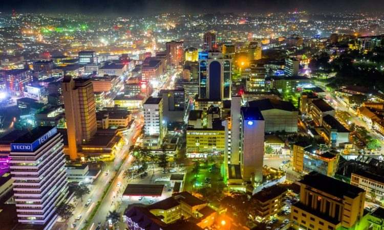Kampala city: The capital city of Uganda can also be visited as part of the Uganda tour where tourist will have a great during day and night lat any day of the week; the city is the business hub of the country and also the entertainment hub. It has a number of business transactions tourists can find interesting like when they visit the different areas for instance Nakasero market where different foodstuffs can be bought, spices and many more, different shopping malls can also be seen that will cater for different classes of tourists, they can also find cinema halls as a way of relaxing and many more.
In the night the city comes to life, the number of entertainment spots like bars, lounges where tourists can go and loosen up are so man that all focus on ensuring top notch services to their clients therefore regardless of where you go to you will receive the greatest time of your life as you enjoy your time in the city.
Entebbe city: Just like other cities in the country, Entebbe is another city that tourists will find interesting as they carry out their Uganda tour the town is a home to a number of tourist attractions like the international airport of Uganda the Entebbe international airport and also the home to the Mabamba Island an island where one can see the critically endangered shoe bill stork which can be found in the Mabamba swamp which to the shoe bill stork. At the swamp, a tourist will get onto a boat which usually carries a maximum of three people to make the birding experience better and to avoid overcrowdedness.
The bird can be seen hiding in the vegetation in order to catch fish in the water which is an interesting scene. The swamp is also home to other bird species which include the African and lesser Jacanas, Pied Kingfishers, the African Pygmie goose, and the blue breasted bee-eaters and most of the birds that are found at the swamp are water birds making Mabamba island(swamp) where
The town is also home to many beaches like the imperial resort beach Munyonyo, Ggaba beach and many others which offer different activities to entertain the tourists through leisure, and entertainment. Tourists can participate in beach sports, sport fishing, beach volleyball among others.
In Entebbe, tourists can also visit the Uganda wildlife education centre commonly known as just the zoo by locals where a number of animal species can be seen like the lions, elephants, tourists can see trained personnel feeding the calves baby elephants) being fed through the bottle and if you get a chance the with the help of the personnel they can help you feed the calves which will be a wonderful experience. Primate species like the different monkey species and chimpanzees to make the experience in the town interesting.
Uganda tourism Festivals
Among the different attractions that can attract a tourist on a Safari Uganda tour, for example, festivals should not be missed by tourists on their tour because the diversity of the different festivals that happen annually in the country. Some of the festivals, although not intended for tourism, are becoming some of the best festivals that have attracted many foreigners to come to the country and be part of them and those intended for tourism purposes. They are very rewarding in terms of cultural exchange through musical performance, cultural dances, cultural foods that are prepared and many more which offer the best Uganda Safaris experience to tourists whose motive of travelling is learning as they enjoy their life.
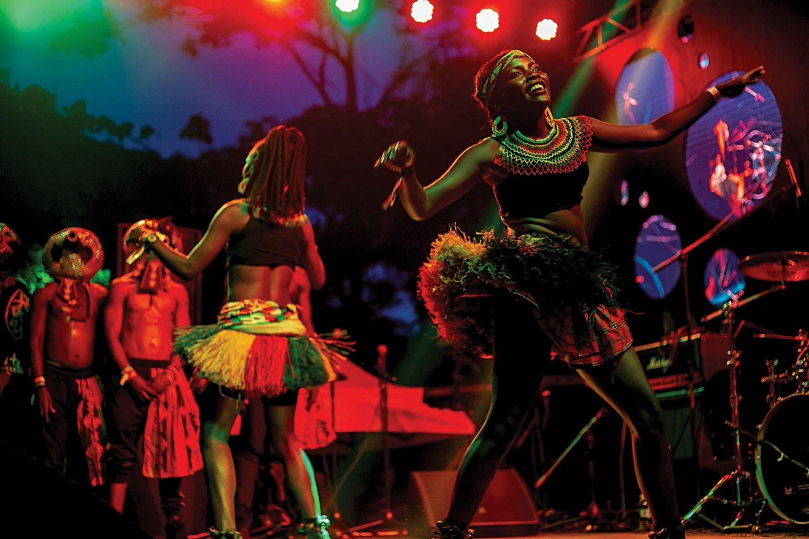Travelers on their Safari Uganda Tour should never miss out on the Uganda Festivals
- Imbalu Cultural Festival: The Imbalu cultural festivities are carried out yearly and these are one of the most interesting festivals that tourist should plan ahead in order to participate in. In Bugisu, the Imbalu festival involves circumcising the young boys and men in the community among a large crowd in order to show that they are fit to be called men in the society; circumcision in the tribe is a sign of bravery and a stepping stone to adulthood. During the festival of circumcising the different potential men, cultural dances like the Imbalu dance are performed in order to entertain the guests and distract the participants. Interesting about the whole ceremony is the fact how the participants who are to be circumcised dress during the festival. They smear themselves with flour which turns them white, they are decorated with colourful beads as a sign of getting ready and being set for the circumcision rituals. It should be noted that men and boys undergoing circumcision should not shed a tear to bring mockery to the families where they come from because the whole practice brings about pride in a family. During the festival a total number of 1000 people that are interested in seeing the activity take part in the whole festival and also the Luhya and Gishu tribe from Kenya also take part in the celebration as they also circumcise their men just like the Bagishu from Mbale. These festivals usually take place from August – December and up to about 1000 young men can be circumcised which can be a wonderful cultural display amidst the circumcision, the local brew is served, cultural foods and feats it is one of the best cultural experiences that a tourist can go through.
- Nyege Nyege Festival: looking for cultural diversity at the same event as you have fun, Nyege Nyege festival is the place to be because it welcomes tourists from different areas of the world and also domestic tourists to come together at the Nile resort beach where Musical artistry where a number of artists perform different songs to entertain the visitors, dance artistry, where different cultural dances from different tribal groups can be performed like the kiganda dance, entogoro and many others all of which ensure cultural preservation and exchange through tourism. Also known as a weekend of nonstop partying by different attendees, the festival will ensure that tourist has fun through dance, music, eating different cultural foods and so much more. For tourists interested in participating in the festival, it happens during the month of September.
- Blankets and wines: For tourists interested in having fun through showcasing different fashion trends as they sip on some wine and feast on different types of meals then the blankets and wines festival is the place to be. The event looks at people celebrating music through different through cultural performances like musical performances, dance performances as tourists engage with different revellers. The whole festival attracts people from different backgrounds and tribes and once they come together, they make a fusion of different tribes making it a place where cultural exchange can be possible.
- Rolex festival: A Rolex as it was ranked as the fastest-growing food in Uganda by the CNN, tourists participating in the Rolex festival will have the utmost fun once they participate in the festival. As a way of celebrating the culture of Uganda through food, the Rolex is a chapatti rolled over an omelette however different inventions on how to spice up the Rolex have been introduced where other ways, for instance, adding in beef, sausages to make them taste different and much more mouth-watering and satisfying for the guests. Tourists on their Safari Uganda tour should take part in the Rolex festival to have a taste of Uganda through the mouth-watering food.